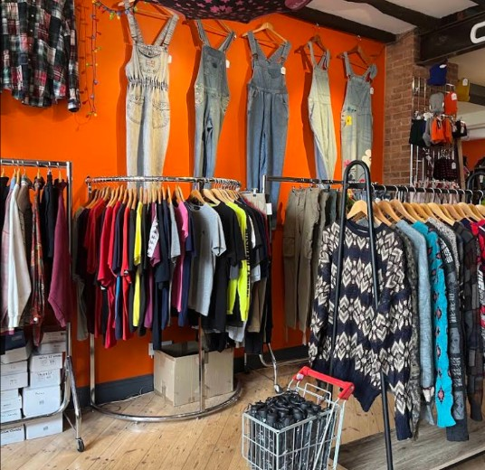
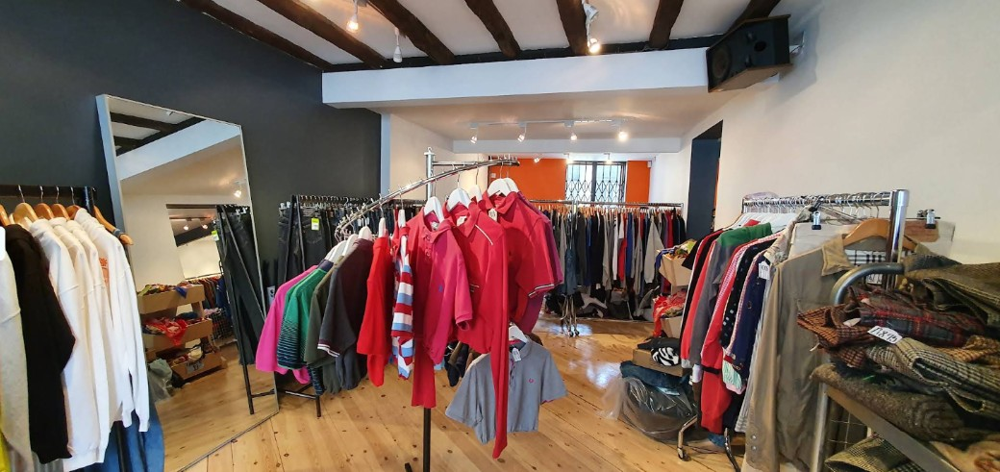
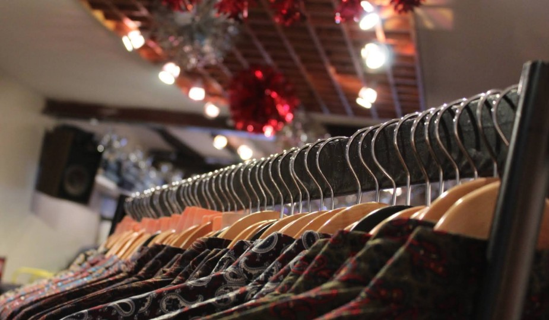
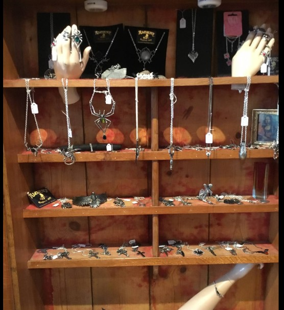

Retro & sports
Sports brands, classic polo shirts and retro pieces, including polos made into crop tops.
Rails of retro clothing, sports brands, rock wear and jewellery on The Strait, at the bottom of Steep Hill in Lincoln.

On the rails
Customers come back again and again, because there's always something new to find, at prices that won't hurt.
Sports brands, classic polo shirts and retro pieces, including polos made into crop tops.
Shirts, knitwear, dungarees and one-off finds from years gone by.
Rock clothing, studded belts and cuffs, at prices well below online.
Gothic jewellery, glasses and accessories to finish the look.
Inside Yak
Wooden floors, beamed ceilings and rail after rail to browse through.



The story
Yak was started by two brothers who began by selling Levi's at university. Decades later, customers still talk about the owner going out of his way to help them find exactly what they wanted.
“The chap who owns the shop is super friendly.” Edward Haywood, Google review
Reviews
4.4 stars from 35 Google reviews.
“Great selection of retro clothing, glasses and accessories. On our latest visit there was a good selection of sports brands and classic polo shirts made into crop tops.”Ben Tuxworth · Google review
“Great shop. Great selection, great prices, very friendly and helpful, gave some good tips for washing/care/prolonging. Wish I'd stopped in sooner.”Andrew Butlin · Google review
“Great selection and reasonably priced too ! Always got some great finds from here . The chap who owns the shop is super friendly. Highly recommend this place”Edward Haywood · Google review
“Affordable, good quality and nice clothes. I shop there from time to time and always end up buying bunch of stuff. The owner is a very nice, friendly and chill guy. Highly recommend”Shiina · Google review
From Yak's Google reviews. Read them all →
Visit